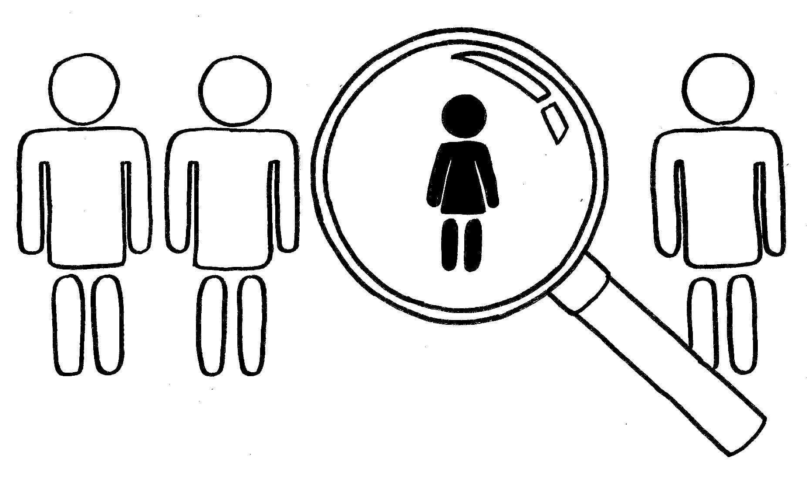

Ob številnih raziskavah v zadnjem desetletju se je pojavilo vprašanje zakaj obstajajo tako očitne razlike med ženskami in moškimi, ki delujejo v znanosti. V zadnjih dveh desetletjih se je zgodil množičen vstop žensk v visoko izobraževanje. Če merimo enakost spolov po tem, koliko žensk je vključenih v izobraževanje v visokem šolstvu in koliko jih diplomira, je primerjava po spolu skoraj enaka.
Na prvi pogled po spolu ni razlik – ženske hitro vstopajo v raziskovalno delo, se udeležujejo konferenc, predavajo kmalu po doktoratu. Problem nastopi pri drugih stvareh, kdo dobi projekte, kdo ima administrativno pomoč pri znanstvenoraziskovalnem delu, kdo dobi nagrade in priznanja za svoje znanstveno delo, kdo odloča o kriterijih znanstvenega dela.
